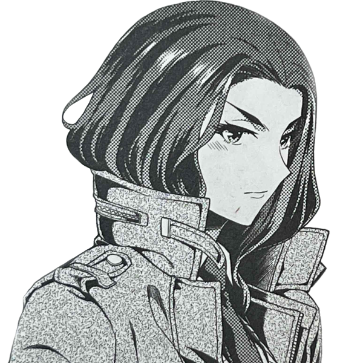
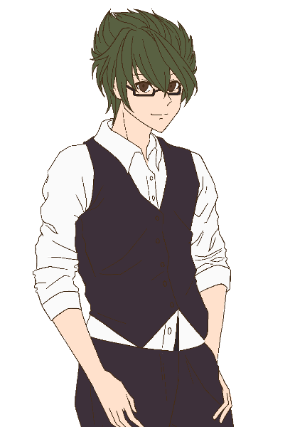
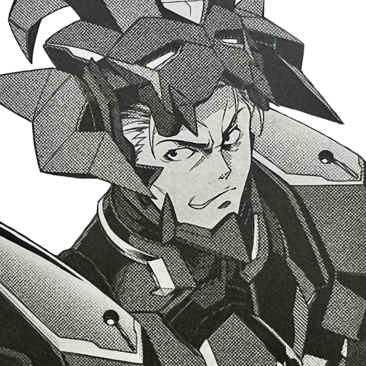

メインログ / 雑談ログ
シナリオ1：「Devil's_Alliance」
シナリオ2：「Blastic Crisis」
キャラシート
PC1：コーネリア (キャラシート) PL：LISPPC2：本野仁 (キャラシート) PL：カピバラ
PC3：サテライト (キャラシート) PL：ふろずん
PC4：佐月零 (キャラシート) PL：めい
PC5：糸金助人 (キャラシート) PL：紫閃
目次
■オープニングフェイズ01 ダークナイト
02 理想の果て
?? 真相の果て
03 騎士の蹂躙
04 廻り出した歯車
05 妄執の正体は
メインプレイ
シーン1 ダークナイト
東京 市街地
GM : 夜、降りしきる雨の中。ダークナイトが佇んでいる。
GM : 足元には血溜まり。それは周囲に広がっており、傷ついたヒーローたちが倒れ、うめいている。
GM : ──すべて、ダークナイトに倒されたヒーローだ。
GM : 倒れているヒーローらが、呻きながらつぶやく。
男ヒーロー : 「な、なんという強さだ…これが、No1ヒーローだった男の実力か……」
女ヒーロー : 「くっ…この強さ、本物のパラディンね……」
悪魔ヒーロー : 「まさか、このディアボロスがここまで歯が立たないとは…強すぎる……ッ！」
GM : ……そんなヒーローたちを一瞥もせず、ダークナイトは無言でその場を去っていった。
GM : ──翌日の新聞の1面には、どの新聞社の物もでかでかと倒れたヒーローたちが映った写真が載っている。
GM : 記事には「なぜあのNo1ヒーローがヴィランに！？」「次々と襲われるヒーロー！誰もダークナイトには勝てないのか！？」と、人々の不安を煽るかのように大きく見出しに書かれていた。
GM : ……しかし、それらは全て事実だ。No1ヒーロー・パラディンは悪に手を染めた。そして、彼に敵う者は誰ひとりしていない。
GM : …今の所は。
シーン2 理想の果て
■PC1：コーネリア
ロイス：パラディン
推奨感情 P:憧憬/N:悔悟
No1ヒーローであったパラディンは、悪の仮面を手にとってヴィランとなった。
今はダークナイトと呼ばれ、キミたちヒーローに敵対する存在となってしまった。
今度出会うときは、彼は憧れのヒーローなどではなく、敵となる。
果たしてキミは、彼と全力で戦えるだろうか？
コーネリア : 1d10+33 (1D10+33) ＞ 4[4]+33 ＞ 37
東京 某カフェ
GM : 今となっては遠くなってしまったいつかの日。
GM : コーネリアは、パラディン……いや、スーツを脱いだ彼、"的場敬吾"と共に都内のカフェを訪れていた。
GM : 昭和に迷い込んだかのような、ブラウンが基調となったカフェの隅で小さなテレビがパラディンの活躍を映している。

パラディン : 「大丈夫だ。ここからはもう、誰も死なせない」
GM : 誰もが安心し、「正義は勝つのだ」と信じたであろう彼の決め台詞に、善良な市民たちが湧く。
GM : そのテレビに映る人物が、コーネリアの前で優雅にコーヒーを飲んでいた。

コーネリア : 「どこに行っても"パラディン"の活躍で持ち切りね～」 どこか楽し気に口を付けていたカフェモカを置く。
コーネリア : 「それにしても……」 テーブルに肘をつき手の甲に顎を載せて、休日の”パラディン”の姿を見る。
コーネリア : 「千両役者はスーツを脱いでも絵になる、ってわけ」
コーネリア : 優雅にコーヒーを飲むその姿を見てため息をつく。
的場敬吾 : 「む……それを君に言われるのは、非常に光栄なことかもしれないな。自分ではスーツを脱げばただのおじさんだと思っていたが」
的場敬吾 : 普段生真面目にヒーローをやっている彼が見せないような表情で、冗談めかしたように微笑む。
コーネリア : 「あら、そういうジョークも言うのね？ 素顔のあんたは」
的場敬吾 : 「私だって人間だ。オフの時くらいあるさ」
的場敬吾 : 「君は……いつ会っても、どこで見ても君のままだな」
的場敬吾 : そう、テレビの中で日焼け止めクリームのCMモデルを務めるコーネリアを眺めつつ返す。
コーネリア : 「当然！ ハリウッドスターは私生活もスターでなきゃいけないからね」 CMのポーズを寸分狂いなく再現してみせる
コーネリア : 快活なふだんのパーソナリティは一瞬で鳴りを潜め、映像の中の日本らしい乙女然とした少女の雰囲気を纏う。
GM : パラディンはコーネリアの纏う雰囲気の変化に、少し目をしばたたかせてからフフッと笑う。
的場敬吾 : 「……全く、君にはいつだって驚かされる。私生活も何も、君はありのままを生きているというわけか」
コーネリア : 「ありのまま、って言っていいのかしらね？ 私はいつも何かを演じて、それを見てくれる人がいないと生きられない人間だから」
コーネリア : 「ヒーローの私。女優の私。そして、いまここであんたとコーヒーを飲んでいる私……」
コーネリア : 「全部微妙に違うように見えるけど、人は自分の中に存在しないものを演じることはできないし、どの側面も否定するようなものじゃないわ」
コーネリア : 「……なんて、考えてもわかんないわよね。あ、おかわりくださーい！」
コーネリア : 明るく元気な様子は変わらないが、言葉の端からは”コーネリア”という人間の一部分としてヒーローを務める等身大の少女の苦悩が垣間見える。
的場敬吾 : 「……」しばらく黙り、彼女の様子を見てから再度口を開く。
的場敬吾 : 「演じる、というのは決して悪い事ではない。それは役者ではない私も、そしてヒーローではない人々であっても当然している事だ」
的場敬吾 : 「それが社会で生きるという事だ。相手に合わせ、一番その場をより良い状態で保つのが人間という生き物なのだから」
的場敬吾 : 「……私もかつては、『本当の自分』とは何なのかと苦悩した日もあった。どう生きるのが正解なのか、何を最も大切にするのが『自分』なのか……」
的場敬吾 : 「……どう生きれば、後悔をせずに済んだのか」
的場敬吾 : 小さく息を吐き、首を振る。
的場敬吾 : 「……過去に囚われるのもまた、どうしようもない事だ。さて、話を戻そう」
コーネリア : 「”パラディン”にもあるんだね、そういう悩みは……」 頷いて、深く問いただそうとはしない
的場敬吾 : 「…私もまた、人間と言うわけだ」 肩をすくめて笑って見せる
的場敬吾 : 「君も言った通り、どの一面も否定してはならない。その全てが『本当の君』であり、君を応援する人々がいる事もまた真実なのだから」
的場敬吾 : 「ただ……これはお節介かもしれないが」
的場敬吾 : 「君は生粋の役者で、ヒーローで、そしてまだ16歳の少女でもある」
的場敬吾 : 「そんな君の全てを理解し、支えてくれる人を身近に作ると良いだろう。性別も年齢も人種も、誰だって構わない。人数も多ければ多いほどいい。ただ、君が信じられる人を傍に置きなさい」
的場敬吾 : 「……できるだけ長い間、君と共に歩んでくれる人をな」
的場敬吾 : そう、まるで実の娘に向けるかのような慈しみの籠った声で伝える。
コーネリア : 「簡単にできることじゃないわね。でも……」
コーネリア : 「ヒーローの大先輩がそう言うなら、頑張ってみようかしら」 年相応の、不完全性に満ちた笑顔でそう答える。
的場敬吾 : そんなコーネリアの姿を見て、安心したようにうなずいて見せる。
的場敬吾 : 「ああ。もしそんな仲間ができたなら、私にも報告してくれると嬉しい」
コーネリア : 「オーケイ、きっと一番に報告するわ！」 親指を立てる
GM : そんなやり取りをしているうちに、店員によって「お待たせいたしました」とコーネリアの注文したカフェモカがテーブルに置かれる。
GM : 優しいミルク色ととろけるようなブラウン、そして窓から差し込む暖かな光。
GM : その記憶も、今となってはセピア色に滲んでしまった。
コーネリア : 「――バカね。ここに来たって、時間が戻るわけじゃないのに」
コーネリア : あの日と同じ昭和レトロの雰囲気を纏ったカフェの片隅で、一人つぶやく。
コーネリア : どのチャンネルも、今は”ダークナイト”の話題で持ち切りだが、ニュースの内容は頭の中を右から左へ通り過ぎていく。
コーネリア : もともと日本での活動基盤を持たなかったコーネリアにとって、甲斐甲斐しく自分の面倒を見てくれた”パラディン”は、先輩ヒーローであると同時に歳の離れた兄のような存在だった。
コーネリア : 自分がどんなに速く走っても追いつけない、ずっと先を走る存在のように思っていた。
コーネリア : 「……違う……本当はわかってたはずなのに」
コーネリア : 彼も、自分と同じ迷える青年だった。外から見える強い部分と同じくらい、弱い部分だってたくさん持っていた。
コーネリア : ずっと近くで彼を見ていた、天才役者である自分が、一番それをわかっていたはずだったのに。
コーネリア : 大粒の涙が、冷めきったカフェモカの中に零れ落ちる。
コーネリア : 彼が己の過去を後悔したあの時、もっと自分が踏み込んでいれば、違う未来があったのだろうか？
コーネリア : ……そんな迷いを振り払うように、涙を拭って一気にカフェモカを飲み干す。
コーネリア : 「はは……しょっぱい。あの時と全然違う味だ……」
コーネリア : 時間は伸びたり縮んだりするが、過去には戻らない。どんなに速く走るヒーローでも、それは変えられない。当たり前のことをコーヒーの味から教わって、左右の頬を思いっきり両手で叩く。
コーネリア : じじっ、と髪留めが焦げ落ち、ブロンドの髪がばさっと開いた。
コーネリア : 「行こう……時間は待ってくれない」
シーン? 真相の果て
？？？
GM : "探索者"本野仁は、何処とも知れない真っ暗な空間に迷い込んでいた。
GM : ここは何処なのか、自分は何をしているのか。そもそも地面に足はついているのだろうか。それすらもわからない。

本野 仁 : 「うーん...ここは一体...？」 周りを見渡すも果てしない闇が続いている
本野 仁 : 「実体はあるようですが...」 こぶしを握りっては放すを繰り返し自身の存在を確かめる
本野 仁 : 「ま、とりあえず動いてみますか。案外出口が見つかるかもしれないし」 慣れない感覚に戸惑いつつも一歩ずつ進んでいく
本野 仁 : とまあこんな感じで何かないかなーって感じでうろうろしてます
GM : では、底知れぬ闇の中、行方も分からず歩き続けると。遠くの方に人影が見えます。
本野 仁 : 「おやあれは...っ...同じ迷子の方ですかね」刹那の間嫌な感覚に襲われるも人影のほうに歩み寄る
GM : 近寄ってみると、そこに居たのは黒装束を身に纏った女でした。その女は、振り返る前に貴方に話しかけてくる。

？？？ : 「呆れた。こんな所に逃げ込んでいたのね」
？？？ : 「誰のお情けでここに来たのかは知らないけど…」
？？？ : くる、と振り返る彼女の顔は……なぜか、見えない。靄がかかったような、意識に蓋がされているような妙な感覚を覚える。
本野 仁 : 「ええと、あなたは？どこかでなんとなーくあったような気はするんですけど...」 頭の中で考えるもはっきりとした答えが浮かんでこない
？？？ : 「貴方が思い出せるはずもないわ。貴方は所詮『彼』の出来損ない。こぼれ落ちてしまった魂のレプリカなのだから」
？？？ : 失望……いや、端から期待などしていなかったのかもしれない。平坦な声で、そう返す。
？？？ : 「自分の出自に疑問も持たず、今後も平穏な暮らしを送れると信じて疑わない貴方には出来ない事よ」
本野 仁 : 「む、いきなり人を出来損ない扱いとは失礼ですね」
本野 仁 : 「一応”探索者”ですよ、自分の生まれにだって調べたことはあります」
本野 仁 : 「ただ、自分の元なった人は既に死んでいることしか分かりませんでしたけどね。あとこの名前もですか」
？？？ : 「その『元になった人』って誰？死因は？『分からなかった』、それで済ませてそれで満足なのね？」
？？？ : 「……本当に呆れた。やっぱり、貴方は出来損ない。探索者(たんさくしゃ)ではない」
？？？ : 「"パラディン"…だったかしら？彼が真相に至ったその後を貴方は見たというのに、何も感じなかった？」
？？？ : 「真相を知るのが、怖くなっちゃった？」
？？？ : 彼女は、貴方に向かって矢継ぎ早に語りかけてくる。
本野 仁 : 「そんなことありません！まだ全部が明らかになってないだけ！探し続ければいつかはすべてが分かるんです！」 声を大きくして反論するも虚栄であることはすぐにわかる
本野 仁 : 「真相が明らかになるのが怖くなんか...」 ブラスターの真相を知ったパラディンの末路がよぎり勢いが止まってしまう
本野 仁 : 「っ...！それでも自分は...！」 再びこぶしを握り自身を奮い立たそうとするもその腕がヒトではない何かになっているのに気づいていない
？？？ : 「それでも……何？知らない方が幸せかしら？ルーツとはどんどんかけ離れ、何者でもなくなってしまったと言うのに」腕をちら、と見やる
？？？ : 「それならどうぞ、永久に覚めない都合の良い夢を」
GM : 刹那、脳裏にザザッとノイズが走る。
GM : 『あの日』聴いた激しい雨音。ナイフ。バスタブを満たす鮮血。
GM : 間違えた。間違えた。
GM :
塔のように聳え立つ、円錐の頭部を持つ人型の怪物。触手。邪神。世界を嘲る笑い声。
GM : いつの間にか、目の前から少女は消えていた。身体は、意識はずぶずぶと沈む。昏く、深い闇のうちに。
？？？ : 「『彼』は真相に辿り着けなかった。貴方も、きっとそれは同じ事」
GM : ………
GM : …ぴぴっ！ぴぴぴぴっ！
GM : 間抜けな電子音に、貴方の意識は再度覚醒する。
GM : 目の前は暗い。だが、今回は空間が暗いのではなく、目の前に『何か』がいる。もふっ、ふわっ。
マシュ : 「きゅふん…ハッハッハッ…」
GM : それは、貴方の愛犬のマシュだった。こちらにお尻を向け、胸の上でもちもちと足踏みをしている。可愛いが、正直ちょっと苦しい。
本野 仁 : 「いや...自分は...！」 空に手を伸ばすと同時に目が覚める
本野 仁 : 「もう、乗っかかられたせいで嫌な夢見ましたよ」 ついさっきまで飼い主が感じたことなど関係ないかのように呑気にのしかかる飼い犬に呆れながらも反対の手で頭をなでる
マシュ : 「…！ハッハッハッ！」そんな飼い主の苦労を知ってか知らずか、主の目覚めに嬉しそうに舌を出して、手に頭を擦りつけてくる。
GM : と、そうして飼い犬を構っていると、ヒーローとして活動する際に使用している端末から着信音が鳴る。
GM : 画面に表示されている名前は「霧生冴花」、警視庁ヴィラン課の課長だ。
本野 仁 : 「まったく、休む暇もないですね」 なでるのをやめて端末を取り着信を受ける
霧生冴花 : 「おはようございます。"探索者(サーチャー)"の端末で間違いありませんね」
本野 仁 : 「ええ、"探索者(サーチャー)"...で合ってますよ」
霧生冴花 : 「……？」妙な返事に少し首を傾げる雰囲気が伝わる。
霧生冴花 : 「…いえ、失礼いたしました。本題に移ります。大変急で申し訳ありませんが、至急警視庁ヴィラン対策課までいらしていただけますか」
霧生冴花 : 「"パラディン"……いえ、"ダークナイト"の件について、ご相談させていただきたい事があります」
本野 仁 : 「...はい、問題ないです、すぐに行きます」 ダークナイトの名が聞こえると少し声のトーンが下がる
霧生冴花 : 「ありがとうございます。では、後程」
GM : 電話が切れる。
本野 仁 : 「じゃあ出かけるのでいいこにしていてくださいね」 分かった？と問いかけるようにマシュの頭をなでるて部屋のドアを開けて外へ向かう
本野 仁 :
丁度ダークナイトの話が来て内心ほっとしている
先ほどの少女の言葉、それをしばらく考えなくて済むのだから──
シーン3 騎士の蹂躙
■PC2：本野仁
ロイス：コーネリア
推奨感情 P:信頼/N:不信感
Mrコバルトの計画により、パラディンは、今やダークナイトを名乗るヴィランとなった。
次々とヒーローを襲撃し、叩きのめしているという。
ダークナイトの目的とは、一体なんなのだろうか。
そして、「パラディンの後継者」であったコーネリアは、彼と戦えるのだろうか……。
本野 仁 : 40+1d10 しんしょくー(40+1D10) ＞ 40+9[9] ＞ 49
警視庁ヴィラン課 課長室
GM : 警視庁ヴィラン課、課長室。
GM : 君は、その部屋で霧生冴花と二人きりで対峙していた。
GM : 霧生は、傷つき倒れたヒーローたちの画像を何枚も提示する。
GM : 写真には新米ヒーローもいれば、歴戦のベテラン、名のあるトップヒーローまでいる。
霧生冴花 : 「…本題に移ります。貴方もご存じのように、"ダークナイト"……そう名乗るヴィランによる、ヒーローの襲撃事件が続いています」
霧生冴花 : 「正義の味方であった彼は失墜し、ヒーローなら誰でも、手当たり次第に痛めつけている……という感じです」
本野 仁 : 「そうですね、ブラスターの死によって彼は変わってしまった...」
霧生冴花 : 「ええ。もはや彼は"パラディン"ではない」首肯して
霧生冴花 : 「自分の強さを誇示しているようにも見えますが……何を考えているのか、現時点では見当もつきません」
霧生冴花 : 「……ですが。どのような事情があれど、我々としてはこのまま被害の拡大をただ見ている事はできない」
霧生冴花 : 「そこで、貴方にお声がけさせていただきました」
霧生冴花 : そう、本野を見つめる。
本野 仁 : 「自分ですか...その理由を聞いても？」
霧生冴花 : 「はい」頷き
霧生冴花 : 「我々警視庁は、"ダークナイト"に対抗できるヒーローたちとして、デビルズ・アライアンス事件のチームメンバー……貴方を含めた5人を選出しました」
霧生冴花 : 「我々からの依頼はただ一つ。"ダークナイト"を止めてください。……手段は、問いません」
霧生冴花 : 「危険な任務ですが……お返事をいただけると幸いです」
本野 仁 : 「断る理由もありません、引き受けましょう」 過去の事件で共に戦った4人の顔を思い出す
霧生冴花 : 「……ありがとうございます」立ち上がり、深々とお辞儀をする。
霧生冴花 : 「後程、他のメンバーにもこの事を伝えておきます。……こちらから伝えられることは以上です」
霧生冴花 : 「他、質問等はありますか？」と尋ねてくる
本野 仁 : 「いえ特には...」 少し上の空の様子
霧生冴花 : 「……わかり、ました。何か悩み等あれば、またご連絡ください」その返事に少し心配する様子を見せつつ、本野の返事に頷いて見せる。
霧生冴花 : 「それでは、ご武運を」
シーン4 廻り出した歯車
■PC3：サテライト
ロイス：霧谷雄吾
推奨感情 P:誠意/N:食傷
パラディンが姿を消して、数日が経過した頃。
キミは、霧谷雄吾に呼び出された。
彼が言うには、ダークナイトによって、UGNの研究施設から、あるカプセルが奪われてしまった。
それは、ノーマル（非オーヴァード）にとって危険な存在だという。
ヴィランとなった彼を、止めなければならない。
■PC4：佐月零
ロイス：ナイチンゲール
推奨感情 P:親近感/N:敵愾心
ヴィラン、ダークナイトとなったパラディン。
彼はもうジャーム化している。
ナイチンゲールとともに、ダークナイトに倒されたヒーローを治療するキミには、それが確信できた。
キミの友人、ロボがそうであったように、ジャームとなった者はもう戻れない。
コーネリアに、その覚悟はあるだろうか……。
サテライト : 1d10+45(1D10+45) ＞ 10[10]+45 ＞ 55
佐月零 : 1d10+39(1D10+39) ＞ 4[4]+39 ＞ 43
マンション 佐月零とサテライトの部屋
GM : 某日。"アルターエゴ"の住処である、マンションの一室にて。

サテライト : 「……ん～」
サテライト : ここ数日のサテラの様子は明らかにおかしい。
サテライト : “あのサテラ”が手作りプリンを気にも留めず、
サテライト : 一人きりでスマートフォンとにらめっこして、うんうんと唸りながら、頭を捻っているのだ。
サテライト : ──サテラは元々、興味を持った事柄について気が済むまで調査しようとする性質はあった。
サテライト : しかし、それでも、今回は異常だ。 “あのサテラ”がプリンに手を付けようともしないなんて。

佐月零 : 「……おい、サテラ」 スマホを操作するサテラへと後ろから近付いて声をかける
サテライト : 「……ふ～」
サテライト : 「なんだ？ レイ？」
佐月零 : 「プリン作ったぞ。今日もいらねえのか」 手に持ったトレーの上には二つのカップが並んでいる
サテライト : 「そうだな、それも今はいい」
佐月零 : 「…………」
佐月零 : トレーをテーブルの上に置き、溜息をつきながら椅子に座る。
佐月零 : 「……お前、なんか最近おかしいぞ」
サテライト : 「君がそう思うのならそうなのだろうな」
サテライト : ……先程までの思索も漸く終わったのだろうか、サテラは急に立ちあがり、軽く伸びをした。
佐月零 : 「ま、いいけど……」 プリンをスプーンで掬って
佐月零 : 「調べごとは終わったのか？」 一口食べる
サテライト : 「ああ、もう十分な情報は得たよ」
サテライト : 「今回の事案に関する一般市民とヒーロー業界の反応についてはな」
佐月零 : 「パラディンがヴィランになったことのか？んなこと調べてたのか」
サテライト : 「ああ、必要な調査だったのでな」
佐月零 :
「なんで」
テレビでも一般市民の反応はある程度見れてるので、不機嫌そうにプリンを食べる
サテライト : 「…………」
サテライト : 「そうだな、強いて言うならば未来のためだよ、レイ」
サテライト : そう言いつつ、サテラはごそごそと自分のバッグを漁りはじめた。
サテライト : 「──まあ、それはともかく」
サテライト : そして、今度は何をするのだろうと様子を窺っていると、サテラは徐にカメラを取り出した。
サテライト : そのデジタルカメラは、デビルズアライアンス事件（一話）後、あなたが買い与えたものだ。
サテライト : 少しばかり値が張ったが「ロボに近況報告をするためだ」とねだられては断れなかったのだ。
サテライト : 以来、サテラはそれを常に肌身離さずに持ち歩いている。
サテライト : 堂々と撮影禁止の場所に持ち込んでいたことさえあった。 ……余談だが、その時は監督不行届であなたが怒られた。
サテライト : 当初は気になるものならパシャパシャとどこでもなんでも手当たり次第に撮っていたのだが、
サテライト : その道のプロであるジェイミー西崎に写真の撮り方を習ってからは、カメラの扱い方もそこそこサマになってきた。
佐月零 : 「……？なんだ、何か撮んのか？」 プリンを食べ終わる
サテライト : 「ああ、外出先で二人で撮る事はあっても、この部屋で二人で撮るのは今までなかったろう？」
佐月零 : 「あ？二人で？今ここで撮るってのか？」
サテライト : 「そうだが、何か不満か？ 化粧でもしたいのか？」
佐月零 : 「誰がするか！！」
佐月零 : 「ったく、しょうがねえな……別に不満とかじゃねえよ」
佐月零 : 「でも、いきなりなんで思い立ってるんだ？」
サテライト : 「なんで、と言われてもな」
サテライト : 「私自身も言語化できないから困る」
佐月零 : 「なんだそりゃ。ま、撮るならさっさと撮ろうぜ」
サテライト : 「……そうだな」
サテライト : 「あ、レイ、笑顔でポーズだぞポーズ」
佐月零 : 「ああもう、分かった分かった」
佐月零 : 軽く笑顔を作って、ピースをする
サテライト : 「ピースはありきたりすぎてつまらん、撮り甲斐がない、却下……というかピース(平和)でも何でもないじゃないか現状」
佐月零 : 「どうしろって言うんだよ！じゃあどんなポーズして欲しいか言ってみろ！」
サテライト : 「ふむ、そうだな…」
サテライト : 「では、こうしよう」
サテライト : サテラはあなたの右隣に並び立つと、手でハートマークの片側を作ってみせた
サテライト : 「以前、メイド喫茶とやらにプリンを……ではなく、テレビか何かで見たポーズだ」ﾑﾀﾞﾝﾃﾞ ﾒｲﾄﾞｷｯｻ ﾆ ｲｯﾀﾉｶﾞ ﾊﾞﾚﾙﾄｺﾛ ﾀﾞｯﾀｿﾞ…
佐月零 : 「却下」 即答してサテラの手を軽くはたき落とす
サテライト : 「え～……、つまらん男だな君は～……」ぶー
佐月零 : 「こんなんやるくらいならつまらん男で良いわおれは！！」
佐月零 : 「あぁもう、ピースで良いだろピースで！世の中が平和だろうとなかろうとこういうのはピースで良いんだよ！！」
サテライト : 「こんなんと言ったが、おっぱいプリンもこのポーズしてたぞ」口から出任せ
佐月零 : 「何っ……」
佐月零 : 「それどこでやって……！いや、まあ、そういう仕事だってあるか……」
佐月零 : 「ともかく、かわいい女の子がやるならまだしも、おれがやるのはなんか違うんだよ！」
サテライト : 「えっ、君、以前は自分の事をかわいいと…………」
佐月零 : 「あ、あれは勢いでだなぁ！！……あーもう、ごちゃごちゃ言わずにさっさと撮れ！！」
サテライト : 「それもそうだな、それじゃあ、左側のハートを作ってくれ、ピースじゃないぞハートだぞ」
サテライト : 「もしくは横向きにしたピースを組み合わせてSマークにでもしておくか？」
佐月零 : 「あぁ！？なんだよピースを組み合わせるって……！」
佐月零 : 「……結構アリか？」 想像してみて
サテライト : 「Sマークは“サツキ”と“サテライト”の頭文字という点から、私達のトレードマークのようになってきているし、ハートに抵抗があるならそれでいこう」
佐月零 : 「そうだな……悪くねぇ気がしてきた」
佐月零 : 「よし、じゃあそれでやるか！」
佐月零 : そう言って、ピースした指を横向きに傾ける
サテライト : 「よし、その調子だ」
サテライト : サテラは少し背伸びしながら片手でカメラを掲げ、自分たち二人に向ける。
サテライト : 「それじゃあ次は、君の人生で最高の笑顔をこの一瞬で作ってくれ」
佐月零 : 「無茶言うな！」
サテライト : 「だが、おっぱいプリンなら難なくこなすぞ？」
佐月零 : 「一々コーネリアを引き合いに出すな！」
サテライト : 「そうだな…、考えてみれば、コーネリアは女優、レイはプリン職人だものな…」
佐月零 : 「プリン職人でもねえよバカにしてんのか！？」
佐月零 : 「……あぁもう分かった分かった、やってやるからさっさとシャッター切れ！！」
サテライト : 「ふふっ、ならば、いまの君ができる最高の笑顔をくれ」その様子を見ておかしそうに
佐月零 : 「うるせぇ！世界一の笑顔見せてやるわ！！」
サテライト : 「今度はまた随分と大きく出たな？」
サテライト : 「では、その世界一の笑顔をカメラに向けて……3、2、1」
佐月零 : 「……！！」 力が入り過ぎてめちゃくちゃぎこちない笑顔を作る
サテライト : 「──はい、プリン」パシャッ
佐月零 : 「……よし、どうよ」
サテライト : 「ん～」
サテライト : 「…………この笑顔が世界一？ よくそんなドヤ顔ができたな君？」
佐月零 : 「んだと！？見せてみろ！」 カメラを覗き込む
サテライト : 高性能なデジタルカメラのディスプレイには、ある種の威嚇のような酷く不自然な笑顔を浮かべているあなたが写り込んでいた。 その反面、隣にいるサテラはごくごく自然な笑みを湛えている。
佐月零 : 「…………」
佐月零 : 「よし、世界一だな」 目を逸らしながら
サテライト : 「マジかレイ」
佐月零 : 「マジだ。どう見てもおれの方が良い笑顔してる」
サテライト : 「本気で言っているなら、シャックルズかディアボロスにいいメガネ屋を紹介してもらうといいぞ……」
佐月零 : 「…………」
佐月零 : 「……言ってねーよ……何だこの写真、かっこわる……」
佐月零 :
「消去してくれ……」
ムキになったのを後悔したのか、疲れた溜息をつく
サテライト : 「ふふふふ、いやいや、これを消すのは勿体ない」
サテライト : 「これはこれで面白いじゃないか、おっぱいプリンにも見せるといい」
佐月零 : 「見せれるわけねぇだろーが！さっさと消せ！！」
サテライト : 「断る！ 逆に永久保存してやろう！」
佐月零 : 「ふざけんなサテラ！ちょっとカメラ貸しやがれ！！」 キレながらカメラに手を伸ばして
サテライト : 「はは、それはレイでも出来ない相談だな！」背伸びしたり屈んだり影に入ったりして躱す
佐月零 : 「こいつ……ッ！！」 伸ばした手は何度も宙を掴み続ける
GM : …と。2人がカメラの奪い合いをしていると、零の端末に着信が入る。
GM : 画面には、内閣府のR対策室室長・霧谷雄吾の名前が表示されている。
サテライト : 「おっとアブナイアブナイ……それより、こんな事をしていていいのか？ 着信だぞ？ それも内閣府からだぞ？」
佐月零 : 「なぁ！？こんな時に……！」 端末を睨みつけて
佐月零 : 「あとで絶対写真は消すからな……もしもし！？」 通信に出る
霧谷雄吾 : 「も…もしもし？"アルターエゴ・ゼロオーバー"ですね……今、お時間いただいても大丈夫でしょうか？」普段聞かないような剣幕の声に、思わずたじろぎつつ尋ねる
佐月零 : 「あぁ、すんません……大丈夫です大丈夫です。ちょっとバカの相手してただけですから」 サテラを睨みつけながら
サテライト : あなたの睨みつけを、サテラは悠々と笑顔で流した
霧谷雄吾 : 「ああ……」何やら察した様子で、「お疲れ様です」と貴方を労う
霧谷雄吾 : 「では、本題に移らせていただきます。"ダークナイト"による一連の事件について、また新たに深刻な問題が起きた為、それに関する調査を依頼したくご連絡を差し上げました」先ほどまでとは打って変わり、真剣な声色で。
佐月零 :
「……ダークナイト」
その名を聞いた瞬間、さっきまで抱いていた怒りが消える
佐月零 :
「深刻な問題って、何が起きたんですか？ ……サテラ」
端末をスピーカーフォンにして、二人で聞けるようにする
サテライト : 「ん、矢張りダークナイトについての話か」
佐月零 : 「あぁ……」 端末をテーブルの上に置く
霧谷雄吾 : 「詳細について、ここではお話しできませんが……先日、UGNの研究所が彼によって襲撃され、『ある物』が持ち出されました」
霧谷雄吾 : 「その持ち出された物品が問題で……すみません、通信が傍受されている可能性もある為、あとは対面でお話しさせていただいてもよろしいでしょうか」
佐月零 : 「ある物……？分かりました、もちろん大丈夫です」
霧谷雄吾 : 「ありがとうございます。では、お二人の都合の良い時間帯にR対策室までご出頭願います」
霧谷雄吾 : 最後に「よろしくお願いします」と付け加えた後、霧谷は通信を切る。
サテライト : 「……出頭願います、と言われると、私達が何か悪い事をしたように感じてしまうな」肩を竦めて笑う
佐月零 : 「いやお前、今のはそういう意味じゃ……」
佐月零 : そう言いかけて、自分達がブラスターを救うことが出来なかったあの瞬間を思い出す。
佐月零 : 「…………」
佐月零 : 「……とにかく、行くぞ」
サテライト : 「ああ、そうだな、UGNの杜撰な管理体制こそ悪い事だろうと指摘しにいこう」
佐月零 :
「文句言いに行ってどうすんだよ、ったく……」
呆れたように言って、ヒーロースーツに着替える
佐月零 : 準備を済ませると、サテラと一緒に部屋を出てR対策室へと向かいます。
R対策室 室長室
GM : では、R対策室の室長室に場面を移します。
GM : 部屋の中には、部屋の主である霧谷雄吾、そしてサングラスをかけた男……UGN日本支部長、藤崎弦一も同席していた。
霧谷雄吾 : 「…では、本題に移らせていただきます。先程軽く触れさせていただきましたが…」
佐月零 : 「お願いします。パラディンに奪われたものって一体……？」

藤崎弦一 : 「ああ。……奴が持ち去ったのは、あるカプセルだ」藤崎が言葉の後を継ぐ
藤崎弦一 : 「肝心の中身については未だ不明だ。ご丁寧に研究所のデータベースも破壊してくれた上に研究者も全員重症と来たからな、詳しい事は調査中だが…」
藤崎弦一 : 「現状で確かなのが、ノーマル…つまり非オーヴァードにとって非常に危険なもの、という事だ」
サテライト : 「ふむ、オーヴァードではなくノーマルに対してのみか」
佐月零 : 「んん……おれ達が真っ先に思い当たるのはレネゲイド活性剤だが……」 ロボのことを思い出して小さく唸る
佐月零 : 「それよりももっと危険な代物か……？」
霧谷雄吾 : 「その物がどれだけ危険な物かについて、現状で把握しきれているわけではありません。が…」しばらく逡巡したのち、再度口を開く。
霧谷雄吾 : 「……ダークナイトの標的が、ヒーローのみではなく非オーヴァードの一般市民をも含んでいると言う事実そのものが恐ろしい事であると感じます」
サテライト : 「必死で守ってきた市民にクルリと手の平を返され、あのようにバッシングを受ければ、標的にそれらが含まれるのはムリもないだろう」
佐月零 : 「……ただバッシングされたから、とかそんな単純な理由ならまだマシなんだけどな……」
霧谷雄吾 : 「…真相については、未だ不明のままです。ですが、我々としては最大限市民を守るべく奮闘させていただきたく思います」
霧谷雄吾 : 「だからこそ、貴方方のお力をお借りしたい」真剣な眼差しで2人を見る。
佐月零 : 「あぁ。じゃあ、おれ達の仕事はそのカプセルの調査……。それと、パラディンからカプセルを取り返すってことですね」
霧谷雄吾 : 「その通りです。あるいは、既に使用されていた場合はその対処をお願いしたく存じます」
佐月零 : 「分かりました。サテラもそれで良いな？」
サテライト : 「……いや、そうだな、では先にひとつ質問を」
霧谷雄吾 : 「どうぞ」サテライトを見て。
サテライト : 「ダークナイトを始末しろ、とは言わないのか？」
佐月零 : 「なっ……お前、始末って……！」
藤崎弦一 : 「…随分直接的な物言いをするな」
サテライト : 「オブラートに包み隠すだけ時間のムダだろう？」
佐月零 : 「……あのなぁ、サテラ。時間のムダとかそういう問題じゃねえだろ」 少し怒ったように睨みつけて
佐月零 : 「一体いつからヒーローは殺し屋になったっていうんだ？」
サテライト : 「…………」
サテライト : 「確かにそれはそうだな」
佐月零 : 「ヒーローはヴィランを止めるために戦うんだ。殺すことが目的で戦ったりしねえ」
佐月零 : 「最初から殺すために力を振るうなんて、そんなもんヴィランと同じだ」
佐月零 : 「だからおれ達ヒーローは、たとえどんな悪党が相手でも殺したりなんてしねえ……」
佐月零 : 頭の中に再び、ブラスターが死んだ時の光景が蘇る。
佐月零 : 「……殺しちゃ、いけねえんだ。そういうもんだろ、サテラ」
サテライト : 「ダークナイトを相手取るならば、全力で立ち向かわなければ勝機はない、ほとんど殺し合いに近いものになるだろう……そう考えて“始末”という言葉を使ったが、確かにそれはヒーローに命じるものではなかったな」
佐月零 : 「そういう意味で言ったのかよ……まあ、分かってりゃいいんだ」
サテライト : 「……と話の腰を折ったな、続けてくれ胃がキリキリ谷」
佐月零 : 「失礼だろうが！！」
霧谷雄吾 : 「ハハ…いえ、あながち間違いではありませんので」苦笑いして
サテライト : 「元はと言えばUGN側の失態なのだから、多少のシツレイはいいだろう。 ……まあ、それも、UGNの情報を握っている元No.1ヒーローが襲ってきたとなれば、仕方のない話だろうが」
佐月零 : 「ほんと甘やかさずに怒ってくれていいんすよ……」 片手で顔を覆ってる
藤崎弦一 : 「……」本当に失礼な奴だな、と思いつつ何も言わない。
サテライト : 「……」この藤崎とかいう奴はなんで室内でサングラスかけてるんだ、と思いつつ何も言わない。
霧谷雄吾 : 「いえ…こちらも依頼をしている身ですので」暗に教育は任せた、って態度を取り
霧谷雄吾 : 「…さて。話を戻しますと、事実、ダークナイトの対処については今もヒーロー複数人に依頼をしています」
霧谷雄吾 : 「彼らがダークナイトに敗北したならば、貴方方にもその依頼が来るかもしれません。…ですが、現時点ではお二人にはカプセルに関する依頼に集中していただきたいと思います」
霧谷雄吾 : 「…何しろ、今回紛失したカプセルは物が物です。もし表沙汰になったならば、一般市民の動揺は計り知れないものとなるでしょう…だからこそ、信頼できるヒーローであるお二人にお願いさせていただきたいのです」
佐月零 : 「……分かりました。ヒーローとして、その信頼に応えます」
サテライト : 「カプセルが最優先だな、理解したよ」
佐月零 : 「既に使われたカプセルの対処をするにしても、パラディンから取り返すにしても、まずはカプセルの内容が何なのかを調べるところから……か」
佐月零 : 「じゃあ、さっそく動きます。行くぜ、サテラ」 席から立ち上がる
サテライト : 「ああ」
霧谷雄吾 : 「よろしくお願いします」
藤崎弦一 : 「…頼んだ」退出する2人の背中に声をかける。
佐月零 : 二人に一礼して、部屋から出て行こう！
東京 市街地
GM : では、2人がR対策室を出てから数分後。再度、零くんの電話に着信が入ります。
佐月零 : 「ん？もしもし？」 電話に出ます

ナイチンゲール : 「ああ、出たね。悪いが、すぐにこっちに来てくれないかい。人手が足りなくてね」
GM : “ナイチンゲール”阿見寺ひとえだ。普段よりも気持ち焦りを帯びた声色で、あなたにそう問いかけてくる。
佐月零 : 「ナイチンゲール。人手が足りないって、一体どうした？」
ナイチンゲール : 「パラディン…ああいや、今はダークナイトか。アイツがまたひと暴れしたもんでね、ヒーローがそれはもう大量に運び込まれているのさ」
ナイチンゲール : 「おかげで病院はてんてこ舞いさね」
サテライト : 「ふむ、今日は先が永くなさそうな奴からよくかかってくるなレイ」
佐月零 : 「失礼なこと言ってる場合か！」
佐月零 : 「あー、でもおれ達も今仕事が……」 と、少し考えて
佐月零 : 「……いや。分かった、すぐに向かう」
ナイチンゲール : 「…悪いね。ピークさえ過ぎればすぐに帰すから」よろしく頼んだよ、と言い残してナイチンゲールは通信を切ります。
佐月零 : 「サテラ、病院に行くぞ。パラディンにやられたヒーローの治療が追いついていないらしい」
サテライト : 「それは聞いていた」
サテライト : 「それよりも、てっきり君はヒーローの仕事を優先して断るものかと思っていたが？」
佐月零 : 「そうだな、おれも断ろうかと一瞬考えた……」
佐月零 : 「……でも、この目でちゃんと見ときてぇんだ。パラディンが何をしたのかを」
サテライト : 「……そうだな、それもいいだろう」
サテライト : 「それに、さっき頼まれた仕事とも無関係な行動でもないしな」
佐月零 : 「パラディン関係のことだし、それもそうか……。よし、今度こそ時間をムダに出来ねえ、行くぞ！」
サテライト : 「それもあるが、例のカプセルが既に使用されているならば、ナイチンゲールのいる病院にも既に担ぎ込まれた被害者がいるだろうからな」
サテライト : 「タクシー代くらいは出してもらえるだろうし、急ぐついでに、フィクションのように『飛ばしてくれ！』と言ってみて、実際はどの程度の速度を出すのか検証してみようじゃないか」
佐月零 : 「んな検証してる場合か！こっからだとそう遠くねえんだ、走っていくぞ！」
サテライト : 「走るのか…………」残念そうな顔
佐月零 : 「嫌ならおれの影の中にでも入っとけ！」 そう言って病院の方角へと走り出す
サテライト : 「ではそうさせてもらうよ」≪闇夜の烏≫を使って影もぐりーん
佐月零 : オーヴァード身体能力をフルに使って、病院まで真っ直ぐに向かいます！
東京 某病院
GM : では、程なくしてナイチンゲールの勤める病院に到着します。
GM : エントランスから入ると、そこには軽傷──と言っても、この程度の傷を負っているなら撤退を考える程度の物──を負ったヒーローが大勢座っている。
GM : 駆け出しの新人から名のあるトップヒーローたちまで……まるで、東京中のヒーローが集まったような有様だ。
GM : 二人が病院の奥へと進んでいく最中にも、その後ろから担架で担がれた重症のヒーローたちが大急ぎで運び込まれていく。
GM : あるヒーローの腕はひしゃげ、またあるヒーローは喉を潰されたのか、呼吸すらままならない様子で苦し気に首を抑えている。オーヴァードの力を以てしても、体の再生が追い付いていないのだ。
佐月零 : 「……ひでぇ。こんなの今まで見たことねぇ……」
サテライト : 「……まさかトップヒーロー達までいるとはな、いいやそれも当然か」
サテライト : 「比類なきNo.1ヒーローだった男が、侵蝕率を気にせずに破壊のためだけに力を振るえばな」
佐月零 : 「…………」 返す言葉も見つからず、痛々しそうに運ばれていくヒーロー達を見ている
GM : そうしていると、聞き覚えのある声が背後から飛んでくる。
ナイチンゲール : 「来てくれたんだね、ありがとう！悪いが、これから運ばれてくる急患を受け付けてはくれないかい…！」
ナイチンゲール : そこにいるのはナイチンゲールだった。普段の飄々とした雰囲気はなく、真剣な様子で二人に頼み込んでくる。
佐月零 : 「……！ナイチンゲール！あぁ、分かった！」
サテライト : 「そうだな、応急手当が関の山だが、それでも構わないのだろう？」
ナイチンゲール : 「ああ、専門的な事はこっちのスタッフに任せな。後の事はそこのナースに聞いとくれ！」そう言い残して、彼女は病院の奥へと消えていった。
佐月零 : 「あぁ……！よし、やるぞサテラっ」
サテライト : 「うむ」
サテライト : 「(そして、最も近い場所で見つめるといい……、パラディンが、ダークナイトが、この惨状を引き起こしているという真実をな……)」
GM : ……急患への対応がひと段落した後。二人の元にナイチンゲールがやってくる。
ナイチンゲール : 「本当にすまなかったね。でも、おかげで助かった」ありがとう、と頭を下げる彼女は、疲弊した様子ながらもしゃんと背筋が伸びている。まだまだ気を抜くつもりはないらしい。
佐月零 : 「……いや、役立てたなら……何よりだ」 少し疲れた声で
サテライト : 「それはいいが、今度は自分がベッドで寝なければならないような本末転倒にはならないようにな」
ナイチンゲール : 「まだまだ。アタシを誰だと思っているんだい」安心させるように笑って見せる
ナイチンゲール : 「……しかし、流石に酷いもんさね。まるで、あの頃……レネゲイドウォーみたいな有様さ」
佐月零 : 「レネゲイドウォー、か……」
佐月零 : 「あの頃と同じような被害を、本当にパラディンが一人で出し続けてるっていうのかよ……」
ナイチンゲール : 「……ああ。恐ろしい事にね」
ナイチンゲール : 近くにある自販機で購入したアイスココアを二人に手渡しつつ、言葉を続ける。
ナイチンゲール : 「ついさっき、UGNの方にあるラボからパラディンに関する解析結果の通達が来たよ」
佐月零 : 「解析結果……それって、侵蝕率とかのか……？」
ナイチンゲール : 首肯する。
サテライト : 「ふむ？」アイスココアか…と思いつつ
ナイチンゲール : 「残酷な事を言うよ。だがこれは真実だ」
ナイチンゲール : 一呼吸置き、
ナイチンゲール : 「パラディン……いや、ダークナイトは間違いなくジャーム化している」
ナイチンゲール : 「アタシたちの知っているパラディンは、本当に死んだという事さ」
佐月零 : 「……っ！！」
佐月零 : 肩が震え始め、抱え込んでいた怒りや悔しさが抑えきれなくなる。
佐月零 :
「……クソッ！！」
近くの壁を力任せに殴る。渡されたアイスココアは床に落ち、びしゃっと零れた。
サテライト : 「…………」
佐月零 :
「なんでだよ……！なんで、ジャームになっちまったんだよ……パラディン……ッ！！」
答えははっきりと頭では分かっているが、それでも叫ばずにはいられない
サテライト : 「パラディンは比類なきNo.1ヒーロー、つまりその負担もNo.1だったのだ……」
サテライト : 「それに加えて、家族から相棒まで、身近なものを全て失い、支えを失くしていた……」淡々と事実を並べ立てる
サテライト : 「さらには、守ろうとした市民による追い打ち……」
サテライト : 「ジャームになる条件は、これ以上なく揃っていると思うが」
佐月零 : 「……うるせえ……」
佐月零 : 「おれ達じゃ……あいつの支えにはならなかったっていうのかよ……っ」
サテライト : 「逆に聞くが」
サテライト : 「No.1ヒーローの絶大な負担に釣り合うほど、彼の支えになれていたか？」
佐月零 : 「…………」
佐月零 : 思わず、相棒の顔をぶん殴りたくなる気持ちに駆られる。だがそれは彼女が言った事実を心の中では認めるしかなく、そしてその言葉を口に出す勇気もないからだ。
佐月零 : 「……チクショウが」 震えた声でそう呟く
サテライト : 「ああ、勘違いはしないでほしいのだが」
サテライト : 「私は君を責めている訳ではない」
サテライト : 「……これはヒーロー業界全体の問題なのだから」
佐月零 : 「…………あぁ」
佐月零 : 「そう、だな……。分かってるよ……」 壁に叩きつけた拳をゆっくりと下げる
佐月零 : 「おれ達だけの問題じゃねえ……それでも……おれはおれを責めずにはいられねぇってだけだ……」
サテライト : 「……そうか」
サテライト : 「ならば、君がすべき事はここで壁を殴る事ではない」
サテライト : 「そうだな？」
佐月零 : 「……あぁ、そうだ」
佐月零 : 「分かってるよ……相棒」 伏せていた顔を上げる
サテライト : 「……よし、その調子で頼むぞ」
佐月零 : 「……おう」
佐月零 : 「………………」
佐月零 :
「……サテラ、ありがとな」
まだしっかりと頭が冷えたわけではないが、自分一人ではもっと落ち着いてはいられなかっただろう、と理解している
サテライト : 「……礼を言われるような事をした覚えはないが」
サテライト : 「まあ、いい歳をして世話が焼けるとは思うよ」冗談めかして
佐月零 : 「お、お前なぁ……！」 普段どっちが世話焼いてると思ってんだという目
サテライト : 「ふふっ、これからは一人でも冷静な行動ができるようになってもらわないと困るな」
佐月零 : 「うるせえ！……ったく」 釣られてふっと小さく笑う
サテライト : 「では、さっそく調査に出るとしようか……っと老婆にひとつ聞きたい事があるんだった」
ナイチンゲール : 「…ん？ハァ？老…なんだって？」先程まで2人のやり取りを穏やかな態度で見ていたが、それとは別種の圧を帯びた笑顔を浮かべて
サテライト : 「……あ～、オネエサンと言ったぞ？ つかれて耳が遠くなっているんだろう、少し休んだ方がいいんじゃないか？」
佐月零 : 「ナイチンゲール……」 そこはやっぱりキレるんだな……って見てる
ナイチンゲール : 「フン。休むのは今の時間で十分さね…全く、失礼なガキだね」溜息を吐き
ナイチンゲール : 「それで、聞きたい事ってのは何だい？」
サテライト : 「UGNの研究所から“ノーマルに有害なカプセル”が盗まれたらしいのだが」
サテライト : 「何か心当たりはないか？」
ナイチンゲール : 「待ちな。その話、どこで聞いた？」
ナイチンゲール : 「まだアタシは事情を聞いてないよ。…もしかして、R対策室から依頼でも？」
佐月零 : 「あぁ、霧谷さんからだ。ついさっき依頼を受けたんだよ」
ナイチンゲール : 「なるほどね。全く…おそらくは秘密裏に動いてた事なんだろう。そう簡単に人に話すもんじゃないよ」そうサテライトに忠告する。
サテライト : 「む、別に簡単に話したつもりはないぞ」
サテライト : 「ナイチンゲールがこの情報を漏らすリスクは低いし、医療に携わる者に協力を仰いだ方が情報を得られる可能性が高い、と踏んでの判断だ」
佐月零 : 「そうだな。それに霧谷さんはおれ達アルターエゴを信頼して依頼してくれたんだ」
佐月零 : 「そのおれ達が信頼してるヒーローになら、話したって問題はねえはずだぜ」
ナイチンゲール : 「……フン。まあ、アンタ達の信頼を裏切りゃしないよ。誰にもバラシはしないし、恐らくはこちらの業務がひと段落つき次第同じように連絡が入っていただろうからね」
ナイチンゲール : 「ただ、そそっかしいアンタらの事だ。霧谷の許可も得ずについでに〜って感じで来たんだろう？どうするんだい、万が一ここに盗聴器でも仕掛けてあったら」
佐月零 : 「それは……お、おいサテラ、どうするんだ」
サテライト : 「正直、考えてなかったな」
サテライト : 「だが、まあ、いいんじゃないか？ それはそれで結局は止めるのだから」
佐月零 : 「……っていうか、盗聴器なんか仕掛けられるナイチンゲール達病院側が悪いんじゃねーか？」
サテライト : 「ｿｳﾀﾞｿｳﾀﾞｰ」
ナイチンゲール : 「こんのガキども…ああ言えばこう言うだね！」ガッと怒鳴りつけ
サテライト : 「おおう、そう怒鳴ると血圧があがるぞ」
佐月零 : 「わ、悪かった、悪かったって！！」
ナイチンゲール : 「ったく…次からはリスクを考えて行動しな！」サテライトをポカリと叩きつつ
サテライト : 「あたっ」
ナイチンゲール : 「……さて。言った通り、アタシはまだ事情を何も聞いちゃないよ。当然パッと思いつく心当たりもない」
ナイチンゲール : 「だが、余裕が出来次第こちらのツテを使って色々調べてみるよ。大した事じゃないが、さっきの礼でね」
佐月零 : 「あぁ……助かるぜ」
サテライト : 「さっきの礼……ということは、さっきの仕事のバイト代というヤツは出ない……？」
ナイチンゲール : 「落ち着いたら何かしら考えておくよ。それまではお預けさ」
サテライト : 「おお、それも出るのか、よかったなレイ」
佐月零 : 「いや別にバイトしにきたわけじゃねぇんだから……」
ナイチンゲール : 「そうだよ。しかもそっちのガキはこっちに床掃除までさせようって言うんだからね」床を濡らすアイスココアを見やって
佐月零 : 「あっ、忘れてた！！」 足下を見て
サテライト : 「私が食事を学び始めた頃には、何かを零したら散々怒ったくせにな」
佐月零 : 「状況が違うだろーが！！」
ナイチンゲール : 「冗談さ。……ほら、仕事があるんだろう。とっとと行きな」
ナイチンゲール : 「あとはこっちでやっておくから」
佐月零 : 「ナイチンゲール……。わりぃ、じゃあ行かせてもらうぜ」
サテライト : 「では、レイのおねしょの後始末は頼んだ」
佐月零 : 「おねしょじゃねーよ！！」
ナイチンゲール : 「漫才している場合じゃないよ。……と、その前に」2人を呼び止める
ナイチンゲール : 「さっきも伝えた通り、パラディンは今やアタシ達の敵だ。覆しようがないくらいにね」
ナイチンゲール : 「アンタらは2人揃っていれば大丈夫だろうさ。だが……前にパラディンと共にチームを組んだメンバーは特にショックを受けているんじゃないのかい。…中でもコーネリアは、彼と近いところに居たんだろう？」
佐月零 : 「……あぁ。コーネリアはパラディンと特に親しかったように見えた……」
ナイチンゲール : 「やはりそうかい……」しばらく目を瞑ってから、2人に向き直る。
ナイチンゲール : 「もしダークナイトと相対して、共に立つ仲間が覚悟を決められなかったなら。その時は、アンタらが支えてやりな」
ナイチンゲール : 「もちろん、ゼロオーバーにユニコード、お互いの事もだよ。わかったね？」
佐月零 : 「覚悟……か」
佐月零 : 「……分かった。おれ達はコンビだし、コーネリアとはチームだ」
佐月零 : 「何かあったら、ちゃんと支えるさ……今度は、ちゃんと」 ナイチンゲールの目を真っ直ぐに見つめて
サテライト : 「…………」
GM : そうしていると、病院の奥からナースが駆けてくる。
ナース : 「お話中失礼します！ナイチンゲール、先ほど運び込まれたヒーローが目を覚ましました…！」
ナース : 「ただ、その…随分と錯乱している様子で…！」
ナイチンゲール : 「……！わかった、すぐに行くよ！」
ナイチンゲール : 「…呼び止めてすまないね、もう行っておくれ。信じているよ」と2人に声をかけ、病院の奥の方へと駆けていく。
佐月零 : 「あぁ！行くぜ、サテラ……！」 ナイチンゲールに背を向けて
サテライト : 「…………なあ、レイ」レイくんのヒーロースーツの裾を引いて引き留める
佐月零 : 「うお、なんだ！？」 走り出そうとしてたのでつんのめる
サテライト : 「いや、ひとつ大事な話があったのだが」
サテライト : 「──先ほど老婆に忠告された通り、こんな場所でする話でもないか」
サテライト : 「後で話すよ、とりあえず行こう」
佐月零 : 「はぁ？何なんだよ全く……」
佐月零 : 「まあいい、だったら後で聞く！まずは調査だ！」 病院の出入り口へと歩き出す
サテライト : 「……そうだな、それでいい」
佐月零 : 病院から外に出て、雲に覆われた空を仰ぎ見る。
佐月零 : 「（……ノーマルに危険なカプセルなんか持ち出して、お前はこれから何をするつもりなんだ？）」
佐月零 : 「ジャーム化したお前は、一体何を考えているんだよ……パラディン」
佐月零 : この灰色の空の下のどこかにいる彼の名を呼び、そう問いかける。しかし、答えは返って来るはずもなかった。
佐月零 : パラディンにロイス取ります！P執着/N悔悟で、執着が表です
system : [ 佐月零 ] ロイス : 3 → 4
サテライト : 固定ロイスのパラディンをダークナイトに変更して、同情(P表)/脅威から同情/脅威(N表)に変更します！
GM : 了解しました。
シーン5 妄執の正体は
■PC5：糸金助人
ロイス：ディアボロス
推奨感情 P:友情/N:嫌気
キミの腐れ縁の知り合い、春日恭二が、ダークナイトに敗北して入院した。
不死身の春日はいいとして、かつてのヒーロー、パラディンは一体何をするつもりなのか。
このまま、暴走を許すわけにはいかない。
糸金 助人 : 1d10+34(1D10+34) ＞ 9[9]+34 ＞ 43
東京 某病院
GM : ダークナイトによる一連の事件で、君の腐れ縁──"ディアボロス"こと春日恭二が負傷させられ、病院に運び込まれたという連絡があった。
GM : 君は彼の様子見、もといお見舞いの為に病室を訪れた。
GM : 廊下から病室を覗いてみると、春日恭二は包帯でぐるぐる巻きになった状態でベッドで寝ている。口はへの字になっており、どう見ても不機嫌そうだ。

糸金 助人 :
「不機嫌になる余裕あり……と」
想像していたよりも様態は悪くなさそうで少し安堵したような吐息が漏れた
糸金 助人 : 小さく咳払いを1つして病室に入っていく
糸金 助人 : 「さすが。不死身の名偽りはなし…か」
糸金 助人 : 「……無事かい、“ディアボロス”春日恭二？」
春日恭二 : 「……む。来たか」咳払いで気づき、あなたを迎える。
糸金 助人 : 「ああ、君がパラディンにコテンパンにされたって聞いてね」肩を竦めて それから 邪魔するよ、とベッドに浅く腰掛ける。
春日恭二 : 「フン、コテンパンとは失礼な。私は不死身のヒーローディアボロスだ、この通りピンピンしているじゃないか」包帯の巻かれた腕を軽く動かしてみせる…が、すぐやめる。怪我が痛むのだろう。
春日恭二 : 「…と言っても、流石にこれは強がりだ。パラディン……いや、ダークナイトはあまりに強大すぎる」
春日恭二 : 「結局こうして敗北を喫するハメになったからな…クソッ…」そう、悔しげに悪態を吐いている。
糸金 助人 : 「……だろうね。今回に至っては君の力及ばず…とかいう問題じゃない」
糸金 助人 : 「……相手があのNo.1ヒーロー…パラディンだからね」俯きがちに目を閉じてため息をひとつ
春日恭二 : 「……アレは恐らく、それだけじゃない」
春日恭二 : 「バラディンが強いのは事実だ。だが、あれは全く別物の化け物のようだ……優秀なヒーロー複数人にかかられても復活し、彼らを蹂躙する異常なまでの生命力を持っている」
春日恭二 : 「……いや、生命力と言うよりは、異常なまでの意志……まるで、不滅の妄執に突き動かされてるかのようだった」
春日恭二 : そう、己の見解をぽつぽつと記憶を拾うように呟く。
糸金 助人 :
「……不滅の妄執、か。いったい彼は何をしようとしてるんだろうな」
壁の方を見つめたまま、その言葉に耳を傾ける。
糸金 助人 : パラディンがダークナイトへの変貌した状況、テレビで連日報道されるニュースの数々、そして実際にその目で見たディアボロスの証言……
糸金 助人 : パズルのピースがはまる度に助人の脳内で成される推論は最悪な方へと向かうばかりだった。
春日恭二 : 「さてな…だが、あの意志の源、アイツが闇に堕ちてまで果たそうとしている目的。そこを突き止めない限り、ダークナイトを倒すことは倒せないだろう」
春日恭二 : 「……」思いつめた様子の糸金を見て、コホンとひとつ咳ばらいをする。
春日恭二 : 「フン！しかし、あのパラディンを倒す方法を考える羽目になるとはな……本来ならばこんな形ではなく、ヒーローランキングで争うはずであったのだが」
糸金 助人 :
「はは、君がそれを言うならまずヒーローランキング50位を物にするところからなわけだけど？」
咳払いに思考を中断していつものように茶化してみせる
糸金 助人 : 「……ひとまず、君の言う通り彼が何に執着しているのか…その目的を探ることからかな。相手は無策で突っ込んで敵う相手じゃない」
糸金 助人 : 「恐らくそろそろ僕の方にも要請がかかるだろう……一連の事件の関係者ではあるからね」すっとベッドから立ち上がる
春日恭二 : 「……ああ。恐らくはな…」しばらく黙ってから、再度口を開く。
春日恭二 : 「……糸金。今回の件は、私達にとっても他人事ではないぞ」
春日恭二 : 「ヒーローも、ヴィランも、オーヴァードである事には変わりない。無論、ジャームもだ……我々は常に、表裏一体の関係にある」
春日恭二 : 「もしボタンを掛け違えたならば、私とてヴィランになっていたかもしれない」
春日恭二 : 「そしてそれは、お前にとっても同じ事だ。……己を見失うな。無事に帰って来い」
春日恭二 : そう、己の手を見つめながら伝える。
糸金 助人 : 「……ああ」短くそう答えて
糸金 助人 : 「それじゃあ、僕はもう行くよ。無茶して看護師さんに叱られるなんて止してくれよ？」扉の方へと向かいながら
糸金 助人 :
「……お大事に」
そう言って振り返る助人。
糸金 助人 : その姿に春日恭二は1つの記憶を呼び覚まされる。
糸金 助人 :
降りしきる雨の中。外された血に塗れた仮面。
振り返った彼は泣きそうな顔で笑っていた。

糸金 助人 : 『……僕には、救えなかった』
糸金 助人 : “シャックルズ”が全てを諦めた日。自分の無力さを思い知りヒーローという名を手放したあの日。
糸金 助人 : 目の前にいる糸金助人の表情が8年前のそれと重なる。
春日恭二 : 「……」糸金の背中が、あまりに小さく見える。まるであの日のように、そのままどこか知らない場所に行ってしまうのではないか……。
春日恭二 : ……そして、今度こそ彼は帰って来ないのではないか。
春日恭二 : 「……おい！」お大事に、と言われた直後にも関わらず怒鳴りつける。
糸金 助人 : 「っ！？」突然の大声に肩を揺らし、振り返る
春日恭二 : 「恐らくは、今回またあのチームが召集されるのだろう！そうなった時、チームにおける最年長は私ではなく貴様になる！」
春日恭二 : 「だと言うのに、貴様が腑抜けていてどうする！しゃんとしろ、ライバルとして情けない！」
春日恭二 : まだ足りないらしい、ベッドから半身を乗り出した状態で捲し立てる。
春日恭二 : 「"シャックルズ"はこれまでも、そしてこれからも、大勢の人間を救う！ノーマルのみならず、ヒーローやヴィランまでもな！」
春日恭二 : 「……仮にまた貴様が逃げたならば、悪魔(ディアボロス)は地獄の果てまで追いかけるぞ。今際の時まで私が共にあるとなれば、流石の貴様も堪えるだろう？」
春日恭二 : そう、どこかヴィランじみた表情で言ってのけてからふうと溜息を吐く。
糸金 助人 : 「……っ、春日…君は…」言葉に詰まる、胸のあたりが熱くなるのを感じる。
糸金 助人 : 「……あーあ。まったく、付き合いが長いってのも嫌なもんだね」ふっとそっぽを向くと、そう絞り出したように言葉にする。
糸金 助人 : 一呼吸、二呼吸置いてから
糸金 助人 : 「……僕が、あとを託していなくなるなんて無責任なことするタイプに見えるかい？」
春日恭二 : 「フッ……ついさっきまでのお前はな」眼鏡越しに目を細めてから鼻で笑って見せる
糸金 助人 : 「はっきり言ってくれるね君も……」文句を言いたげな顔をするがそのまま情けない顔で笑って
糸金 助人 :
「――諦めないさ。今は1人で戦ってるわけじゃない、僕だけの思いでヒーローをやってるわけじゃないんだ」
家族の顔、教え子の顔…そして共に戦ったチームメイトの面々が頭を過ぎる。
糸金 助人 : 「まあ、1人じゃないとは言ったものの君に地獄の果てまで追い回されるのはごめん被りたいけどね」肩を竦めていつもの調子で軽口を言って笑う
春日恭二 : 「馬鹿め、こちらからも願い下げだ」クク、と低く笑い
春日恭二 : 「分かっているなら良い。……ほら、行け。貴様のアホ面は良い見舞いになったが、流石にもう見飽きた」
春日恭二 : シッシッ、と追い払うような仕草をする。
糸金 助人 : 「……ああ」
糸金 助人 :
「…ありがとう、春日」
そう言って再び背を向けて扉に手をかける。今度は振り向かずにそのまま部屋をあとにする。
春日恭二 : 「……フン」糸金の後ろ姿を見送った後、腕を組み目を閉じる。……不安がないと言えば嘘になる、だが…
春日恭二 : ……今の彼であれば、また帰ってくるはずだ。そう確信するだけの信頼関係がある事も、また事実であった。